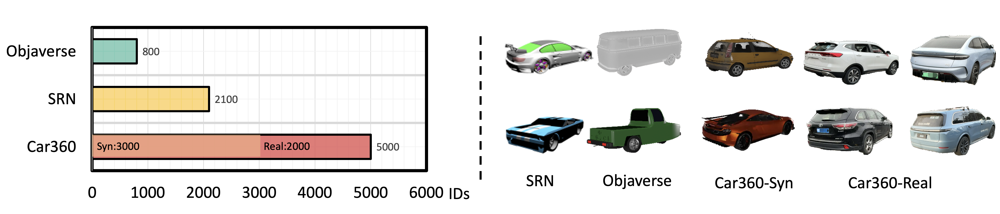
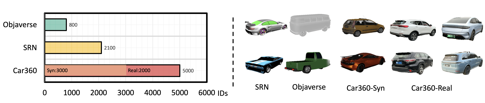

Our Car360 Dataset
Our Car360 dataset contains 5000+ vehicles and can be divied into two parts, Car360-Syn and Car360-Real .

The self-driving industry usually employs professional artists to build exquisite 3D car models. However, this is too expensive to craft large-scale digital assets. Since there are already numerous datasets available that contain a vast number of images of cars, we focus on reconstructing high-quality 3D car models from these datasets.
However, these datasets are only collected from one side of the car in the forward-moving scene. We try to use the existing generative models to provide more supervision information, but they struggle to generalize well in real-world cars since they are trained on large-scale synthetic datasets instead of car-specific datasets. In addition, The reconstructed 3D car texture misaligns due to a large error in camera pose estimation when dealing with in-the-wild images. These restrictions make it challenging for previous methods to reconstruct a complete 3D car model.
To address these problems, we propose a novel method, named DreamCar, which can reconstruct a high-quality 3D car model given a few images even a single image. To generalize the generative model, we collect a car dataset, named Car360, with over 5,000 vehicles. With this dataset, we make the generative model more robust to real-world cars. We use this generative prior specific to the car to guide its reconstruction via Score Distillation Sampling. To further complement the supervision information, we utilize the geometric and appearance symmetry of cars. Finally, we also propose a pose optimization method that has pose correction ability to tackle texture misalignment. Extensive experiments demonstrate that our method significantly outperforms existing methods in reconstructing high-quality 3D car models.
Our Car360 dataset contains 5000+ vehicles and can be divied into two parts, Car360-Syn and Car360-Real .
